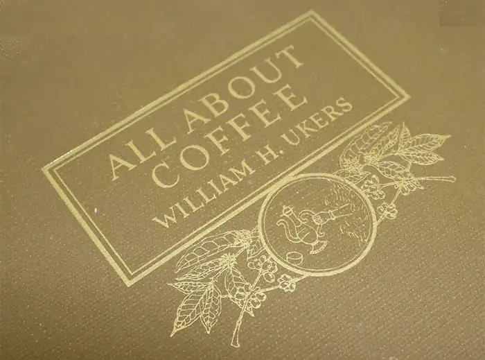
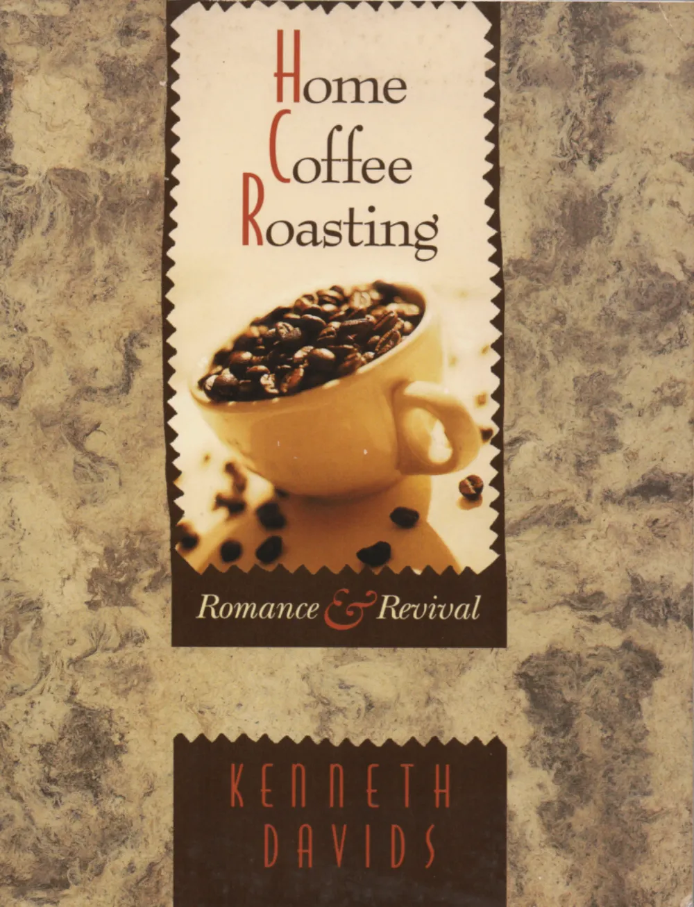
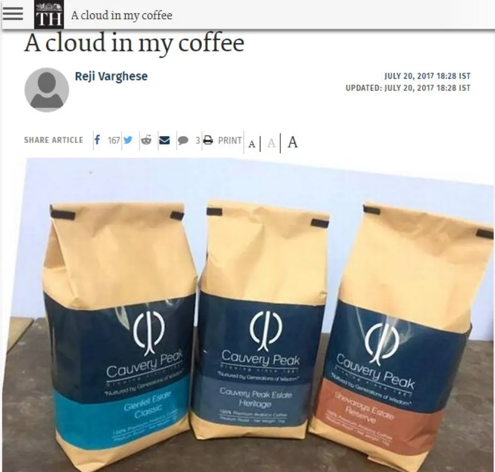
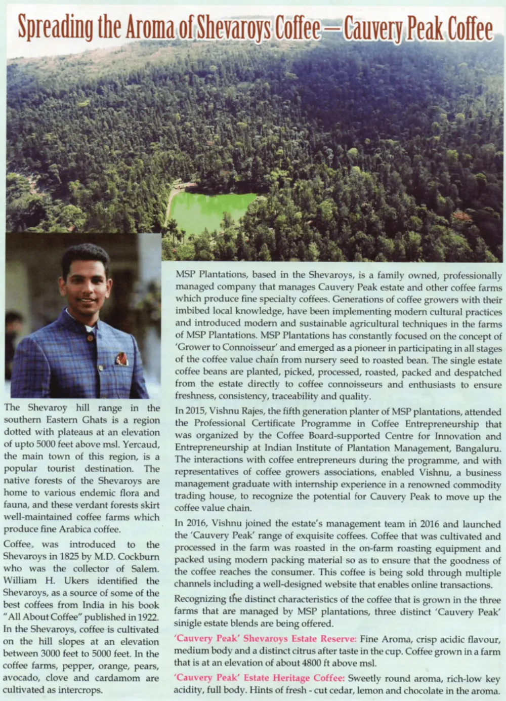
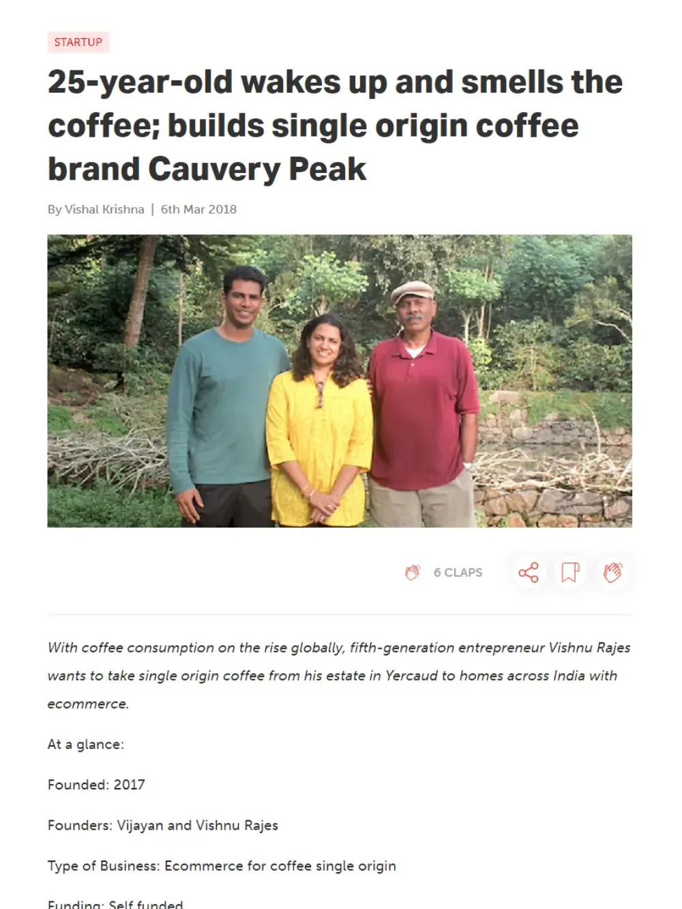
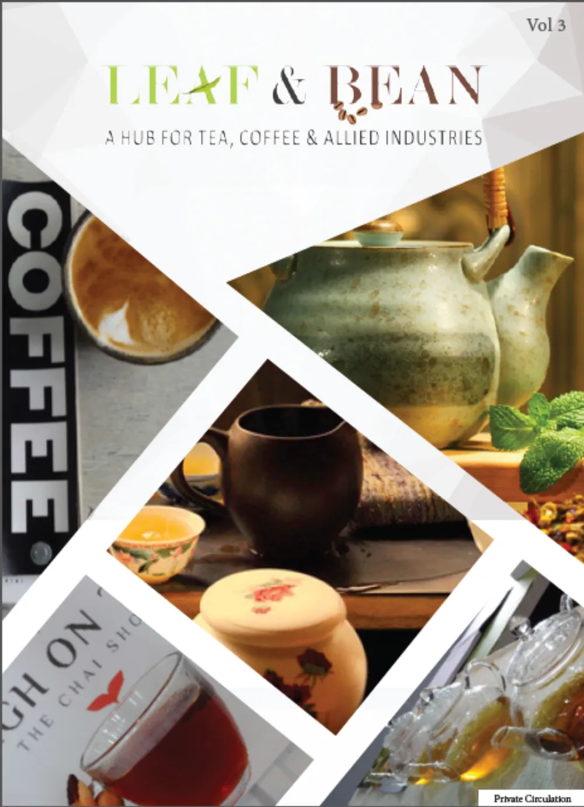
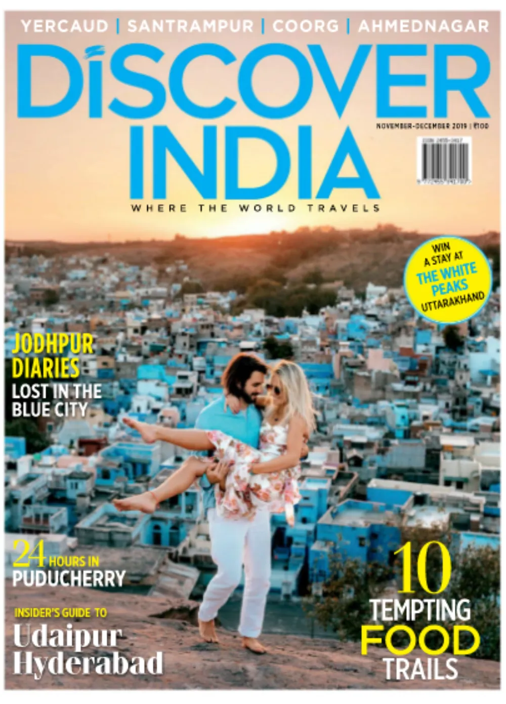

All About Coffee
William H. Ukers
1922
The standard reference work on coffee names the Shevaroys among the sources of the best Indian coffee. Coffee had come to these hills in 1825, planted by M.D. Cockburn, then Collector of Salem.

In print
A century of the hills in print, and three decades of this estate’s coffee in it — from Kenneth Davids in 1996 to the Coffee Board’s own magazine.
All About Coffee
1922
The standard reference work on coffee names the Shevaroys among the sources of the best Indian coffee. Coffee had come to these hills in 1825, planted by M.D. Cockburn, then Collector of Salem.

Home Coffee Roasting: Romance & Revival
1996 · book
Kenneth Davids — author, and later co-founder of Coffee Review — singled the estate out by name in his survey of the world’s coffees.
“I recently tasted an estate coffee from the Shevaroy Hills district of India called Cauvery Peak that simply breaks the mold of most Indian coffees. To the low-key, heavy-bodied profile typical of Indian arabica coffees it adds a dominating, spicy acidity.”

The Hindu · MetroPlus
20 July 2017 · Reji Varghese
On the launch of the estate’s own online service on 3 July 2017, with orders already arriving from Delhi, Lucknow, Bengaluru, Ahmedabad, Nagpur and Virudhunagar. The piece recalls that in 2004 the Coffee Board commissioned Kenneth Davids to select India’s top ten coffees — and that Cauvery Peak was rated in the top three.
“Cauvery Peak Coffee has a sweetly round aroma, rich low-key acidity, and full body. There are hints of fresh-cut cedar, lemon and chocolate in the aroma. In the cup, mid-toned with distinct, clean fruit leaning toward chocolate. Rich, long finish.”

Indian Coffee · the Coffee Board’s magazine
Vol. LXXXI No. 8 · August 2017
Contributed by Dr Ashwini Kumar B.J., Research Chair at the Coffee Board. It traces coffee in the Shevaroys from 1825, describes MSP Plantations’ ‘Grower to Connoisseur’ approach, and sets out the three single estates and how each tastes.

YourStory
6 March 2018 · Vishal Krishna
A profile of Vishnu Rajes and the decision to turn a trading estate into a brand. It also explains the name: from the top of the estate you can see the river Cauvery.
“The opportunity to create a brand was too large to ignore because we were supplying coffee beans to traders who were selling it to coffee companies.”

Leaf & Bean
Vol. 3 · Vishnu Rajes
Vishnu Rajes on interning at an international coffee trading house in New York, where he roasted, cupped and evaluated coffees from around the world — and where colleagues told him the family’s estates were producing single-estate-quality coffee.
“My mission at the outset was very simple. It was to make available 100 percent premium Washed Arabica beans directly from the single estate to the coffee connoisseur.”

Press enquiries
We can arrange estate visits, photography and interviews during the harvest, when the mills are running.
Judge it yourself
Kenneth Davids rated it among the top three Indian Arabicas. The bag costs less than the argument.
Your basket
ShippingFree across India
Total₹0
Secure checkoutRoasted after you order and dispatched in 3–5 business days. Payment is taken on the estate’s Shopify checkout.